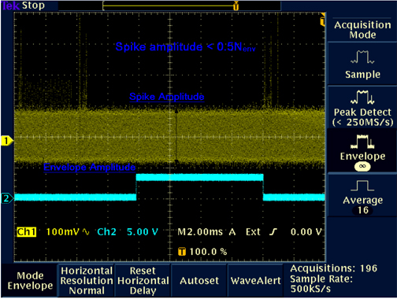

- Object ID: 00000018WHA3091C6GYZ
- Topic ID: id_2001828 Version: 2.11
- Date: Jul 28, 2025 6:24:05 PM
Collecting and analyzing sample noise data
Procedure
- In the Operator Workspace, click Manual Prescan and set R1 = 11, R2 = 15, TG = 0. Click Scan TR.
- Go to the oscilloscope and adjust the scope trigger to show one cycle of the A/D window on the scope channel 2.
Figure 1. Oscilloscope display for A/D window 
- Press the PAUSE SCAN button on the console keyboard. Press the FAN button on the magnet enclosure to turn off the patient comfort fan (the fan turns on automatically with scan software).Note Ignore the first 30 seconds of data.
Result
The Multi-Generational Data acquisition/Radio Frequency (MGD/RF) are now in the receive mode and any noise can be observed at the Transient Detect Module (TDM) Spike Detect port. The scope must be in auto trigger mode. - Put the scope in continuous acquisition mode. The method for doing this varies with the type of scope. Clear the oscilloscope display and make sure that the trigger is in the auto position.
- Observe the scope display for about two minutes. The noise envelope (channel 1) is typically 200 mV p-p. Check that there are no spikes >0.5 Nenv (where Nenv is the noise envelope peak to peak value) above the noise envelope.
Figure 2. Spike noise scope waveform (paused prescan) 
Note Ideally, there should be no spikes beyond the envelope. Any spikes present indicate that a connection is loose or a component is bad (for example, intermittent connection of power cable to a shield cooler cold head, or copper fingers on the exam room door are damaged). Noise spikes that are greater than the spike spec create images with corduroy-like artifacts. Noise spikes that are presently less than the spike spec get worse over time.Note If there are no spikes present and there is doubt whether the setup is working, simulate an RF leak by opening the exam room door, or by turning the room lights on or off if the site is RF quiet. Clear the oscilloscope display and observe the new waveform on the display. Noise spikes should display beyond the waveform envelope. Do not forget to close the exam room door when finished. - Press FAN on the magnet enclosure to turn on the patient comfort fan. Clear the oscilloscope display and make sure that the trigger is in the auto position. Observe the oscilloscope display for about two minutes. The noise envelope (channel 1) should remain as described in the previous step.
- Clear the oscilloscope display and change the trigger from auto to normal.
- Press FAN on the magnet enclosure to turn off the patient comfort fan.
- Press START SCAN on the console keyboard to resume pre-scan. Click Scan T/R.
- Observe the scope display after two minutes. The noise envelope (channel 1) should be approximately 200 mV. Check that there are no spikes >0.5 Nenv (where Nenv is the noise envelope peak-to-peak value) above the noise envelope in the region of interest (except for maybe a beginning and ending transition spike). See Spike noise scope waveform (paused prescan) above.Note The Region of Interest extends beyond when the observed Data in Window signal is high because the Data in Window position varies with Excitation Time (TE). The Transition Spike (not always present) occurs when the RF subsystem transitions from transmit to receive frequency; it occurs ~1 msec prior to the Data In Window. The frequency transition point can be confirmed by viewing the DDS OUT signal on the Exciter Board.Note If the spike noise appears only during pre-scan, the problem is more likely to be a loose connector, freely hanging cables near the magnet, poorly soldered components, or coil mounting hardware. Investigate anything that is subject to vibration from gradient activity.
- Click Done.
- Click New Series. Set up the scan prescription for series #2 scan per the notes and data in the following table, then repeat the steps above.
Table 1. Series 1 - 8 Scan Parameters Series 1: Series 2: Series 3: Series 4: Series 5: Series 6: Series 7: Series 8: Head Head Head Head Body Body Body Body SCAN PARAMETER Plane: Axial Axial Sagittal Coronal Coronal Sagittal Axial Axial Sequence: 2D GRE 2D GRE 2D GRE 2D GRE 2D GRE 2D GRE 2D GRE 2D GRE ACQUISITION TIMING Freq: 256 256 256 256 256 256 256 256 Phase: 256 256 256 256 256 256 256 256 NEX: 1 1 1 1 1 1 1 1 Phase FOV: 1 1 1 1 1 1 1 1 Locs Before Pause: 0 0 0 0 0 0 0 0 Freq Dir: A/P R/L A/P R/L R/L S/I R/L A/P SCAN TIMING TE: 10 10 10 10 10 10 10 10 TR: 20 20 20 20 20 20 20 20 Flip Angle: 10 10 10 10 10 10 10 10 Bandwidth: 15.63 15.63 15.63 15.63 15.63 15.63 15.63 15.63 SCANNING RANGE FOV: 24 24 24 24 24 24 24 24 SL THK: 5 5 5 5 5 5 5 5 Spacing: 1.5 1.5 1.5 1.5 1.5 1.5 1.5 1.5 Start: I60 I60 R60 P60 P60 R60 I60 I60 End: S60 S60 L60 A60 A60 L60 S60 S60 # Of Slices: 20 20 20 20 20 20 20 20 - Repeat the previous step until all head pre-scans (series #1 through #4) are complete.